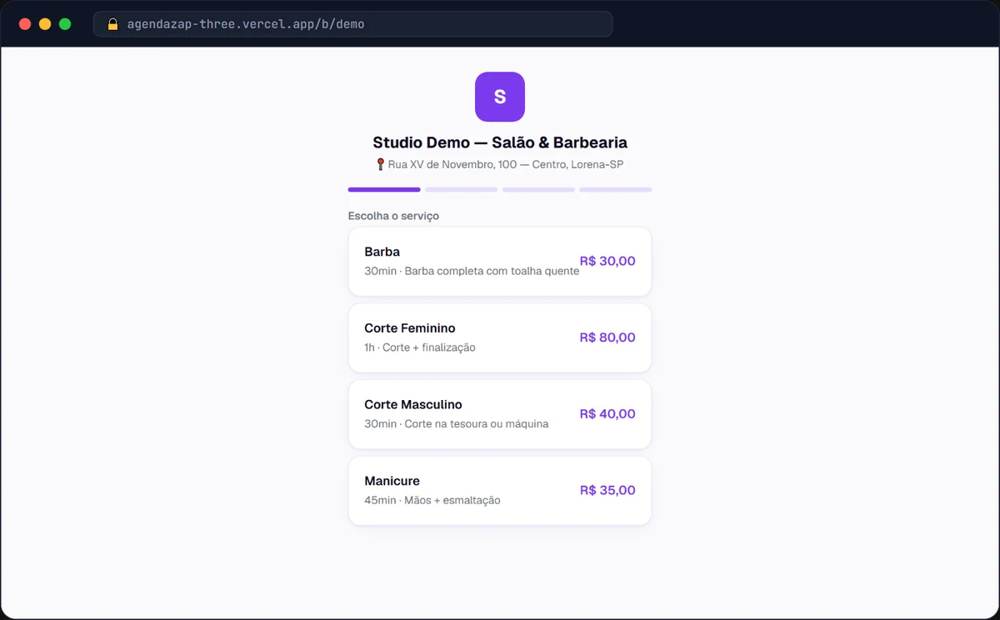

SaaS · IA · WhatsApp
Em produção
14 dias grátis
AgendaZap
SaaS de agenda inteligente para salões, barbearias e estética: o cliente agenda sozinho pelo link público ou conversando com a atendente de IA no WhatsApp, que consulta horários, agenda e cancela sem intervenção humana. Lembretes automáticos 24h e 2h antes derrubam o no-show; recuperação de inativos, aniversário, NPS e campanhas seguram o cliente na base.
Multi-tenant com RLS no Supabase, assinatura recorrente (Mercado Pago) com trial de 14 dias, PWA instalável, LGPD e monitoramento com Sentry — rodando em produção com demo aberta.